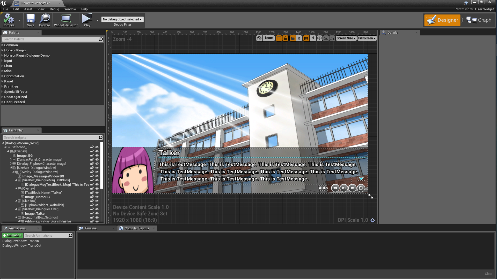
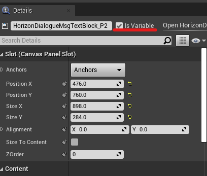
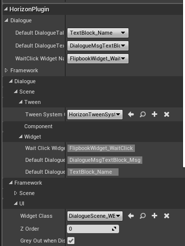
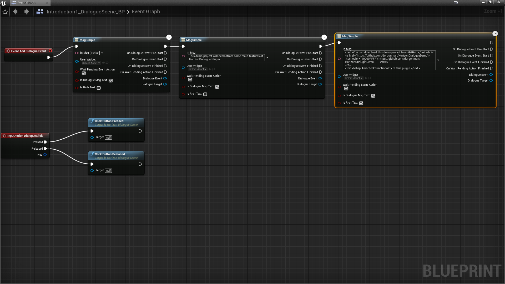
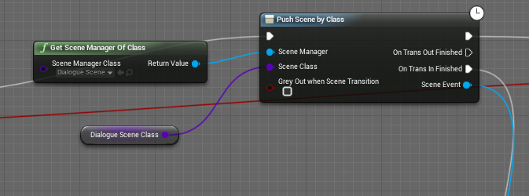

marketplace: https://www.unrealengine.com/marketplace/en-US/product/horizondialogue-plugin
public feed: nuget.org

Note:
master branch may be unstable since it is in development, please switch to tags, for example: editor/4.25.0
How to Run Demo Project before purchase:(Only for Win64 editor build, no source code)
- Double click install_game_package_from_nuget_org.cmd, and check if UnrealEditor-*.dll are installed to Binaries\Win64 and Plugins\HorizonDialoguePlugin\Binaries\Win64\
- Double click HorizonDialogueDemo.uproject
HorizonDialoguePlugin
5.7.0
http://dorgon.horizon-studio.net
dorgonman@hotmail.com
The goal of this plugin is to provide a dialogue framework that can easily integrate story telling in your game using blueprint.
System Requirements
Supported UnrealEngine version: 4.22-5.4
Installation Guide
Put HorizonUIPlugin, HorizonTweenPlugin and HorizonDialoguelugin into YOUR_PROJECT/Plugins folder, and then add module to your project YOUR_PROJECT.Build.cs: PublicDependencyModuleNames.AddRange(new string[] { “HorizonUI”, “HorizonTween”, “HorizonFramework”, “HorizonDialogue”});
User Guide
Here is basic process of creating a DialogueScene.
- Create Dialogue Layout using UserWidget.

- Set widgets that you want to be accessed by DialogueSystem as Variable.

- Create Blueprint(TestScene_BP) that extends from HorizonDialogueScene and setup defualt widgets for DialogueScene.
Note: The widget need set to Variable in step 2 in order to be selectable in drop-down list.

- Add Dialogue Events in TestScene_BP, like following:

- Push BP_TestScene using HorizonSceneManger.

Technical Details
Features:
-
Support many DialogueEvent:
-
WidgetEvents: CreateDialogueMsg, CreateDialogueTalkerNameAndMsg, CreateDialogueMsgWithParam, CreateDialogueMsgWithParamEx, CreateDialogueTextBlock, CreateDialogueImage2D, CreateDialogueUserWidget, CreateDialogueFlipbook, CreateDialogueChoice, CreateDialogueSetWidgetList.
-
ActionEvents: CreateDialogueWaitPendingAction, CreateDialogueWaitDuration, CreateDialogueWaitClick.
-
SceneEvents: CreateDialogueChangeScene, CreateDialoguePopScene, CreateDialoguePushScene.
-
SoundEvents: CreateDialogueSound.
-
-
Automatically widget visibility control: Target Widget will visible when DialogueEvent start and hide after finished,
-
Every DialogueEvent has following callbacks: OnDialogueEventPreStart, OnDialogueEventStart, OnDialogueEventFinished. You can add any custom actions here.
-
Control speed of Auto process or Skip DialogueEvents.
-
DialogueHistoryManager and DialogueHistoryTileView
Code Modules: HorizonDialogue(Runtime), HorizonDialogueEditor(Editor), HorizonFramework(Runtime), HorizonFrameworkEditor(Editor), HorizonTween(Runtime), HorizonUI(Runtime)
Network Replicated: No
Supported Development Platforms: Win64, Mac, Linux
Supported Target Build Platforms: All Platforms
Tested Platform: Win64, Android
Documentation: https://github.com/dorgonman/HorizonDialogueDemo
Example Project: https://github.com/dorgonman/HorizonDialogueDemo
Important/Additional Notes:
This plugin integrated functions of my other plugins, all features and codes in following plugins are included:
HorizonUI
HorizonTween
HorizonFramework
What does your plugin do/What is the intent of your plugin
The intent of this plugin is to provide a framework that can integrate story telling feature in games.
Contact and Support
Email: dorgonman@hotmail.com
Discord: https://discord.gg/surfzAz
Version History
*5.7.0
Update to 5.7.0
Update HorizonUI to 5.7.0
Update HorizonTween to 5.7.0
Update HorizonFramework to 5.7.0
*5.6.0
Update to 5.6.0
Update HorizonUI to 5.6.0
Update HorizonTween to 5.6.0
Update HorizonFramework to 5.6.0
*5.5.0
Update to 5.5.0
Update HorizonUI to 5.5.0
Update HorizonTween to 5.5.0
Update HorizonFramework to 5.5.0
*5.4.1
Update [HorizonFramework](https://github.com/dorgonman/HorizonFrameworkDemo) to 5.4.1
* [New] Implement Push/Change Scene by SoftClass
* [New] Implement Push/Change Scene using UserWidget Only, without Create Scene BP Asset
* [Optimization] include UE_INLINE_GENERATED_CPP_BY_NAME to all .cpp for increase compile time
*5.4.0
Update to 5.4.0
Update HorizonUI to 5.4.0
Update HorizonTween to 5.4.0
Update HorizonFramework to 5.4.0
*5.3.1
-
[BugFix] Fix FHorizonDialogueEventMsgDataTable can’t assign DataTable
-
[BugFix] Fix MsgFromDataTable crash
-
[Refactor] RawPointer to TObjectPtr
*5.3.0
Update to 5.3.0
Update HorizonUI to 5.3.0
Update HorizonTween to 5.3.0
Update HorizonFramework to 5.3.0
*5.2.1
-
[BugFix] Fix FHorizonDialogueEventMsgDataTable can’t assign DataTable
-
[BugFix] Fix MsgFromDataTable crash
*5.2.0
-
[DialogueActionLibrary] Support UHorizonDialogueMsgTextBlock for Tween Widget Color Action
-
[Refactor][Break][DialogueEvent] Fix AddTweenEvent param from pTweenEvent to InTweenEvent
-
[DialogueHistoryTileView] Refactor and inherited from UHorizonTileView
Update HorizonUI to 5.2.0
Update HorizonTween to 5.2.0
Update HorizonFramework to 5.2.0
*5.1.0
-
[DialogueQueueComponent] Expose member to protected so it can be modified by it’s child
-
AB#2647 [DialogueFunctionLibrary] ShouldStopAutoOrSkipEventOnDialogueSceneRemoved for DialogueQueueComponent
Update HorizonUI to 5.1.0
Update HorizonTween to 5.1.0
Update HorizonFramework to 5.1.0
*5.0.1
-
[BugFix][WaitDuration] Fix WaitDuration InitProcess not breaking
-
[Refactor] Check nullptr before use for some functions
Update HorizonUI to 5.0.1
- [BugFix][HorizonDialogueMsgTextBlock] Fix MemoryLeak when parse segmentStr using FXmlFile
- [New][DialogueMsgTextBlock] Implement SpaceDecorator and Add Tag param to Segment
- [New][DialogueMsgTextBlock] Add BuildSegment call for Decorator class and rename BuildDecoration to BuildBlockDecoration
*5.0.0
-
[BugFix] Should call NotifyCustomizationModuleChanged when RegisterCustomClassLayout/UnRegisterCustomClassLayout
Update HorizonUI to 5.0.0
Update HorizonTween to 5.0.0
Update HorizonFramework to 5.0.0
*4.27.1
-
[BugFix] Fix missing category in HorizonDialogueType
-
[BugFix] Fix Sonarqube bug warning
*4.27.0
-
[BugFix] potentially uninitialized local pointer variable ‘pOutActor’ used
-
[New][Event] Implement EventName for all DialogueEventParameter Implementation
-
[Refactor] Don’t Add to DialogueEventImag if WidgetName is none when CreateDialogueTalkerNameAndMsgWithImage
-
[New] Use FHorizonDialogueEventImageParameters for TalkWithImage and TalkWithImageSequence
-
[BugFix] Crash if we promote input pin to variable for Custom SGraphNodePin
-
[Performance] Implement DECLARE_HORIZONDIALOGUE_QUICK_SCOPE_CYCLE_COUNTER for performance measure
-
[Submodule] Source\HorizonUI
-
[BugFix] Hotfix Explicit PCH compile error
-
[Optimization] Add PrivatePCHHeaderFile to .Build.cs to optimizae build speed
-
[Refactor][DialogueQueue] Use DialogueScene to check if we need dequeue instead of SceneManager
-
[New][HorizonDialogueQueueComponent] Use Default SceneManager
-
[New][HorizonDialogueFunctionLibrary] Implement GetDialogueQueue
-
[New] Implement HorizonDialogueQueueComponent with DialogueContext Support
Update HorizonUI to 4.27.0
Update HorizonTween to 4.27.0
Update HorizonFramework to 4.27.0
*4.26.0
-
[New] Implement HorizonDialogueGraphPanelPinFactory that can show image and text in BP Nodes.
-
[New] Implement New DialogueEvents: HorizonDialogueEventDisplayPaper2DActor, HorizonDialogueEventDisplayPaperFlipbookActor, HorizonDialogueEventDisplaySkeletalMeshActor, HorizonDialogueEventDisplayPaperSpriteActor, HorizonDialogueEventSetActorList and HorizonDialogueEventPlayLevelSequence.
-
[Refactor] Use RemoveScene instead of PopScene when DialogueEventListFinished
-
[BugFix][HorizonDialogueEngine] CreateDialogueMsgWithParam should Check if UserWidget exist
-
[Refactor] bAutoEvent, bSkipEvent and Implement FHorizonDialogueDelegates::OnProcessSkipEventNative
-
[BugFix][HorizonDialogueEventDisplayChoice] clear ChoiceButtonList before GetWidgetFromName
-
[BugFix] FHorizonDialogueDelegates::OnDialogueEventPreStartNative should be called in DialogueEventStart
-
[Refactor] Don’t need RestartEditor when bEnableHistory now
-
[New] Implement GetTargetWidget for Dialogue Events
-
[New] Implement FHorizonDialogueDelegates::OnDialogueEventFinished and FHorizonDialogueDelegates::OnChoiceButtonClickedNative
-
[Refactor] Remove HorizonDialogueHistoryManager and move functions to HorizonDialogueSystem
-
[New] Implement FHorizonDialogueDelegates::OnDialogueEventStartNative for all DialogueEvent
-
AB#1675 AB#1109 [New][DialogueEvent] Implement TalkSequence, MsgSequence
-
[Refactor][HorizonDialogueFunctionLibrary] SpawnSound should use const FHorizonDialogueEventSoundParameters
-
[New] Implement and Refactor SoundSpawnMethod for Dialogue Event
-
[New][HorizonDialogueEvent] Implement AddTagUnique, GetTags
-
[New][HorizonDialogueEventDisplayChoice] Implement GetChoiceButtonList
-
[New][HorizonDialogueEngine] Implement GetCurrentEvent
-
[New][HorizonDialogueHistoryI] GetItemObject
-
[BugFix][HorizonDialogueEventDisplayChoice] Fix Choice event logic for GoToEventByTag
-
[New][HorizonDialogueEngine] Implement GoToEventIndex, GoToEventByTag
-
[Refactor][HorizonDialogueHistoryManager] OnDialogueEventPreStart callback implementation adjust
-
[Refactor] Coding style
Update HorizonUI to 4.27.0
Update HorizonTween to 4.27.0
Update HorizonFramework to 4.27.0
*4.25.0
Update HorizonUI to 4.25
Update HorizonTween to 4.25
Update HorizonFramework to 4.25
*4.24.0
Update HorizonUI to 4.24
Update HorizonTween to 4.24
Update HorizonFramework to 4.24
*4.23.1
BugFix: [HorizonDialogueScene] Fix Editor crash
*4.23.0
New: Update to 4.23
BugFix: Fix using Flipbook in UHorizonDialogueMsgTextBlock
*4.22.0
NEW: First Version including core features.